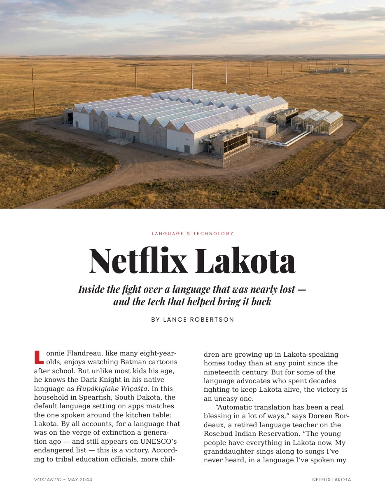
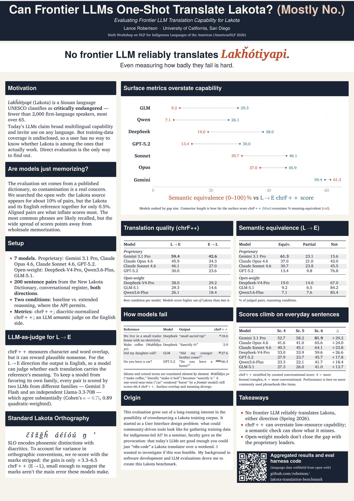
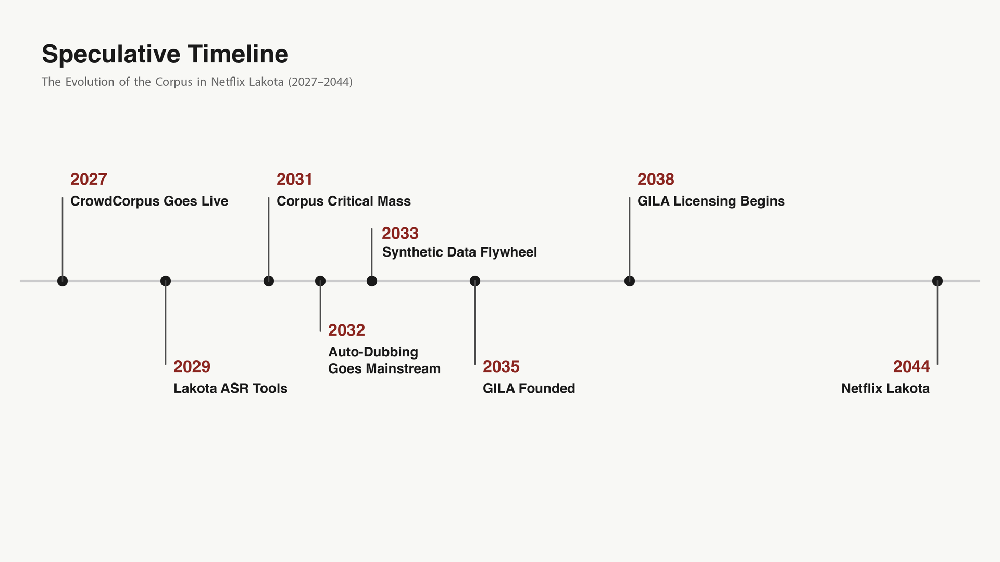

Netflix Lakota

About
A work of speculative journalism about AI translation and Indigenous data sovereignty, set in 2044.
The research behind it became a peer-reviewed paper on Lakota translation by frontier language models, and a series of mockups for CrowdCorpus, a corpus-building tool for language revitalization.
Made in VIS 161, Systems and Networks at Scale (Benjamin Bratton), UC San Diego, Winter 2026.
Supporting research
Lance Robertson, “Evaluating Frontier LLM Translation Capability for Lakota,” AmericasNLP Workshop at ACL 2026: ACL Anthology · code and results.

Speculative timeline
